Jared is a middle-aged guy full of old-man wisdom. He's best described as a gentlemen scholar and a man among men. You can read his writing at his site: Legends of Men


While David G Brown’s recent article is pretty eye opening, it’s a little pessimistic. We need to temper all the bad that happens in this world (like beautiful women becoming ugly) with some good. Here are 17 examples of women who decided to take to make themselves more beautiful.
Let this be some inspiration to show you that there is some beauty in this world.
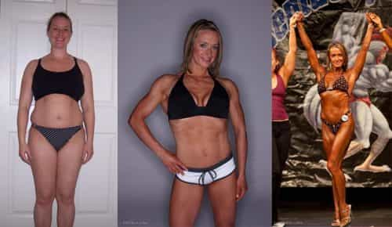
From fat to fit. She’s in her late thirties. Diet and exercise instantly restore as much of youthful beauty as can be restored for women.
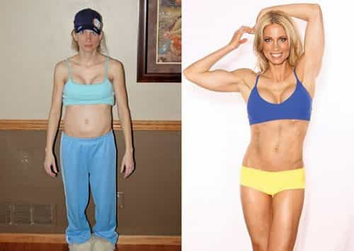
She went from skinny-fat to fit, getting far more beautiful in the process.
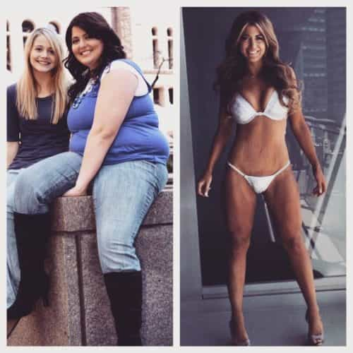
Women can lose a lot of weight without having to also get ripped six pack abs.
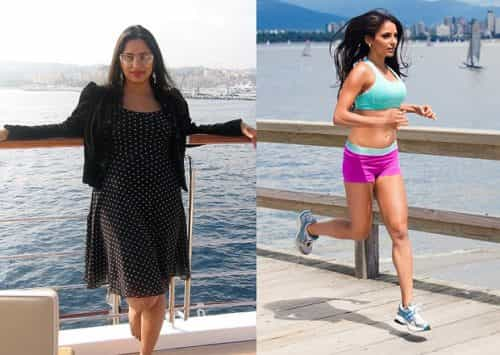
She got beautiful thanks to running and yoga. Whatever works is worth pursuit (as a general rule).
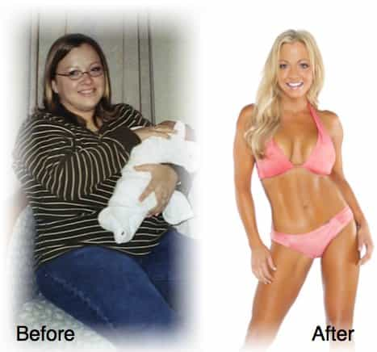
She even lost the glasses.
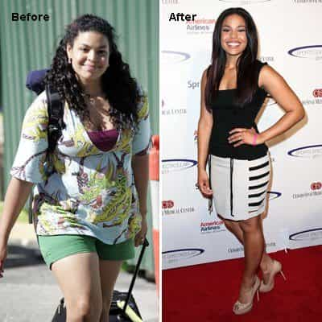
Jordan Sparks shows what happens when you have the money to invest in personal trainers and choose to do so.
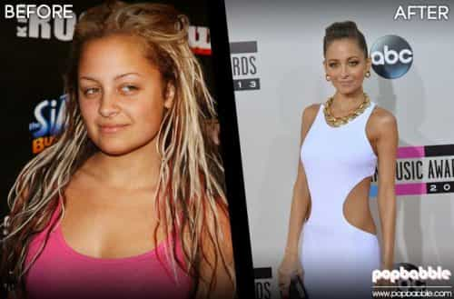
It’s not just about weight loss. Nicole Richie ditched those disgusting dreads and wal-mart shopper attire for something classy. Sometimes that’s all it takes.
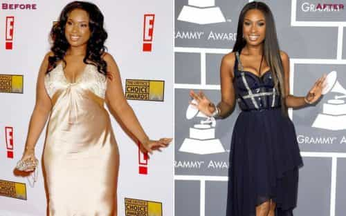
Although her face looked good before, it looks great after weight loss.
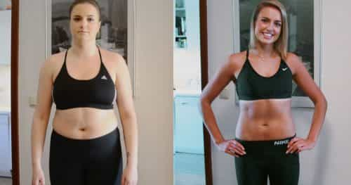
It’s amazing how much of a difference a chin can make.
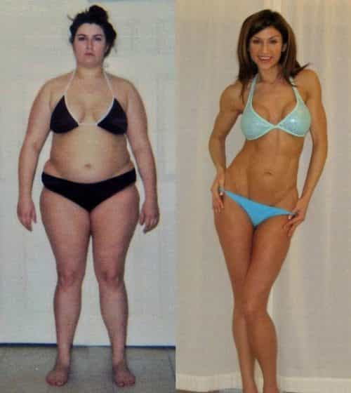
That waist-to-hip ratio incredible. You never would have guessed it was hiding under the fat she had before.
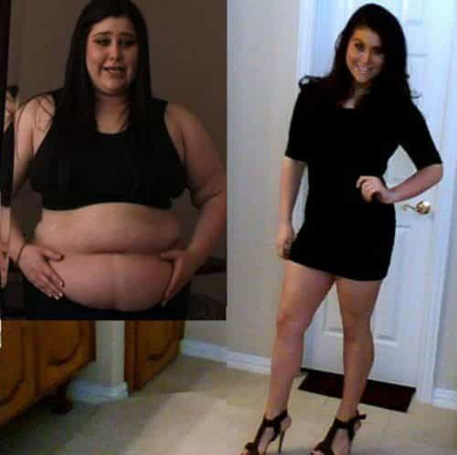
She knows she went from a 2 to an 8 and now she’s ready to break some beta hearts.
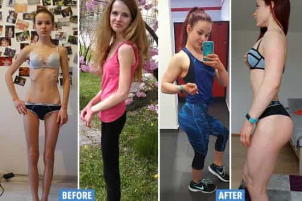
Weight loss is great but one can be too skinny also. Before she looks unhealthy, near death. After she looks full of life, ready to be a great gym partner.
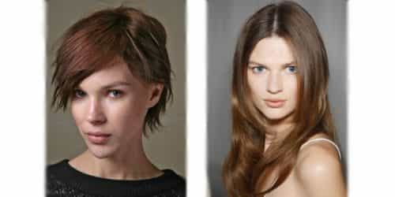
Sometimes all it is short hair to make a beautiful woman ugly or an ugly woman beautiful. Ladies, don’t fall for what the media tells you. All other things being equal, men prefer women with long hair.
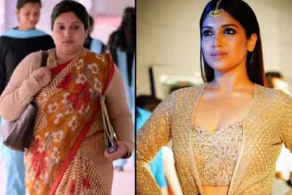
She doesn’t need to pose in a bikini for us to appreciate how much more beautiful she is after losing the weight.
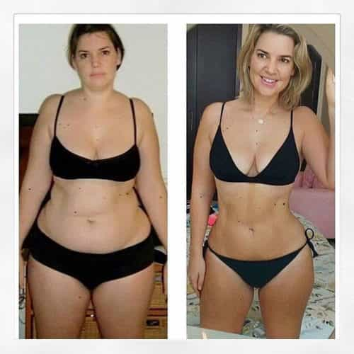
That waist-to-hip ratio really shines after all the fat is burned.
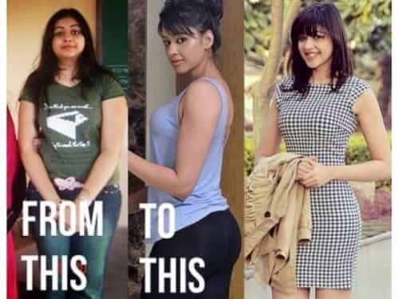
She used to be sloppy. Now she can turn on sexy or classy at her whim. She went from a 3 to every man’s dream, a freak in the sheets and a lady in the streets.
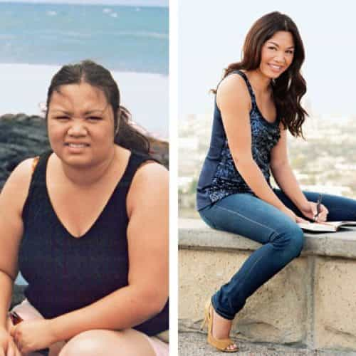
She just doesn’t look happy on the left. She’s drinking a beer. Probably depressed. Even her smile is ugly. But on the right she is vibrant, full of life. She’s keeping a workout journal or making a list of all the ways she is going to be a good wife to some lucky man.
Just like men, women can raise their SMV with some simple but hard-earned efforts. By getting their bodies fit, growing their hair long, and dressing classy, women can be as physically beautiful as they want to be. It’s a choice to be ugly, a choice no one has to make.
The world can be a sad place. The most majestic animals are going extinct. Terrorists blow up ancient works of art. Beautiful women turn ugly. But we shouldn’t focus on those things more than we need to.
We have to remind ourselves that there is good in this world. These were some examples of that.
Read More: 30 Beautiful Women Who Became Ugly